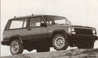
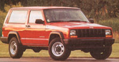
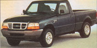
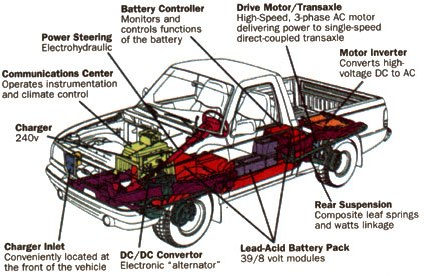
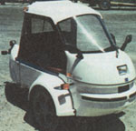
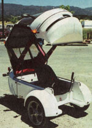

Country Vehicles
If you keep your wits about you, a sanely priced and dependable new truck is still out there.
"Wish a buck was still silver And a man could still work . . . and still would.
Wish a Ford and a Chevy Would last ten years... like they should."
-Merle Haggard: "Are the Good Times Really Over for Good?"
There's good news and bad news. Which would you like first? Okay.
Don't know that the greenback dollar or blue-collar jobs are a whole lot better off now than when ol' Merle penned his mournful lyric back in the early '80s. But the last part of his wish has come true and then some.
Because Fords and Chevy's (and Toyotas and Volvos and Hyundai's and practically all the motor vehicles made around the globe today) will indeed ...and finally... "last ten years like they should"-and longer if given a little care.
MOTHER'S staff, and just about everyone else who needs a car to get around in the vast distances of North America, complained for most of a generation in order to get Detroit and Yokohama to upgrade 1940s-era auto design and production technology to satisfy car buyers, meet requirements of the frequently-updated 1970 U.S. Clean Air Act and the 1975 CAFE (fuel-economy) standards, and wrestle with the mixed challenge and opportunity posed by computer-tech, space-age materials and an interdependent global market.
Detroit is still learning ...grudgingly...but is getting close to overseas competitors in quality and innovation.
Difficult as the transition to the solid-state-electronic 21st-century global economy is proving, today's and tomorrow's motor vehicles may finally be worth the agony. They feature the highest quality, lowest emissions, greatest safety, and best fuel and materials efficiency ever. They are easier to maintain, more fun, and bet ter handling to drive, and they come in an expanding variety of styles and capabilities to satisfy every need and taste.
To top it off is a bit of auto industry intelligence that comes as a genuine surprise in an economy where rural interests are consistently ignored or overwhelmed by the populous cities. But, once distinct, farm-truck and passenger-car design trends seem to be merging within the (worrisome ...but we'll get to that in a minute) Sport-Utility Vehicle (SUV) craze. Hopefully this will give us a multiple-use, carryall type vehicle (as conceptualized in our introductory drawing) that will satisfy the varied vehicular requirements of thrifty; conservation minded country people like you and me.
No need to tell you that the new vehicles are expensive, as much as a house cost a generation ago.
It's the price of computer-age progress, folks. A modern auto can accomplish wonders-engine management that gives us fuel-efficiency and marginally clean exhaust, air bag protection, the added safety of anti-lock brakes and skid preventing traction systems, ergonomic cockpits, climate control in all climates, and CD stereo-hi-fi that were unavailable at any price before electronic hi-technology. Too much of it is needless gadgetry, certainly, but some giant leaps in safety have also been taken.
New technologies are always expensive. (The hi-tech packed into those tiny computer chips is condensed human brain power that must be paid for over time.)
At the same time, some brands' SUVs are falling victim to conspicuous consumers' and manufacturers' mutually reinforcing tendency to equate "bigger and snazzier" with "better," and they are mystifyingly growing larger, more powerful, and more fuel-hungry every model year. To MOTHER'S dismay, the worst offenders are proving more wasteful of limited resources than the fish-finned, overchromed, two-ton gas hogs of the 1950s. Top-line super-luxo SUVs sell for up to $50,000, weigh nearly three tons, and get no more than 10 or 12 miles to a gallon.
Fortunately, for those of us who remember the gas lines of the '70s energy crisis and/or retain a strong sense of personal environmental responsibility, there is a growing selection of new vehicles that qualify as true "appropriate technology" and that will satisfy both our practical needs and the planet's.
And yes ...we can finally urge you to consider leasing or buying a new or almost-new model. Let us explain why.
Buying and self-maintaining decades-old pre-emissions/fuel-efficiency-era vehicles through their "second childhood"-their second 100,000 miles and more-has kept yours truly and many other readers rolling along the country roads in recent decades. But, these '60s and '70s models are becoming tired "Antique-Car Classics," better suited to a museum than the highway. However, their logical replacements-cars made between the mid 1970s and late 1980s and trucks manufactured between the ends of these decades-may well prove terrors to keep going.
These are the vehicles manufactured as government clean-air, fuel-economy, and passenger-safety regulations were being implemented... and, at the same time, the once world-dominant Big-Three U.S. automakers were losing great chunks of market share to smaller, better initial-quality cars from abroad.
Popular as they were, the early imports too often proved to be underpowered for American country roads, too cramped for long-boned Americans over American distances, rust-prone on heavily-salted American winter roads, and too lightly built for lax American habits of auto maintenance.
Mired in a 1950s philosophy that presumed a perpetual demand for ever-bigger cars, an endless supply of petroleum, and an environment able to absorb limitless emissions, old-line Detroit management resented the new government controls and were mystified by America's demand for small, clean, fuel-efficient vehicles. To boot, their first halting efforts to make small cars fell victim to new-born consumer-activism. The nimble little rear-engine Chevrolet Corvair proved unstable in hands of inexperienced drivers taking corners too fast, and (unfairly, according to modern Corvair enthusiasts) became the subject of Ralph Nader's Unsafe At Any Speed- the book that many feel brought on the Clean Air Act all by itself. And Ford's little Pinto was met with a rash of lawsuits and destructive publicity when its fuel tank was shown to explode in rear-end accidents (explosions that were prevented in later models by installing a simple steel bar-a part that had been specified by Ford engineers, but eliminated by cost-cutting money-managers).
While Japanese and European car makers toughened their products to meet American requirements, Detroit beat a retreat. Faced with a sudden flood of Japanese mini-pickups, the Big Three lobbied the federal government to set up import/export quotas (that are still in force) and kept building full-sized trucks that were little but reskinned versions of the same great, clunky farm haulers produced since the '50s. To combat innovative Honda CVCCs, they awkwardly "downsized" established auto designs.
Worst of all, (from all makers) the early equipment cooked up to choke fuel-efficiency and strain clean emissions out of old-style, free-breathing engines was beyond primitive. Some were spaghetti-like masses of tubing and flimsy plastic valves, given to clogs and quick deterioration.
With new engine-management systems being developed by every manufacturer every year-sometimes several times a year-early emissions-era vehicles were hard to diagnose and repair even when brand new. As they age, this multitude of variouslyequipped vehicles will prove ever more difficult and costly to maintain. Indeed, when all but the most common older engine-management/emissions-control designs age to the point that the manufacturer no longer makes or imports low-volume replacement parts, the vehi cles may become impossible to maintain to air-quality standards. This writer owned an early '80s Renault 5 (Le Car) that fell victim to just such a problem. It became impossible to satisfy state emissions limits without trying to fabricate parts for the rat's nest that made up the smog-control system. This proved so costly that the car qualified for an exemption. But, getting one every inspection season required so much paperwork, red-tape-cutting, and time off the road, it became more hassle than the little vehicle was worth.
There is a real question as well to the extended-longevity potential of mid-to-late '80s and early '90s vehicles. Increasingly, components such as brake master cylinders, alternators, constant-velocity joints, rack & pinion steering assemblies-entire transmissions and engines even-are not made to be repaired as in the old days. Laced with miniaturized electronic controllers, sensors, and activators, many are not even repairable by experts, but must be replaced entirely if any small component fails. These parts are free under new-car warranties. But ex-warranty, they can be prohibitively expensive to buy new or have rebuilt (if possible) by a pro, and they are far too complex for the back-yard mechanic.
On the positive side, the very latest cars and trucks offer a stunning improvement in quality. Newest (early '97) data from leading auto-opinion surveyor JD Power shows the number of customer problems with new vehicles is down more than 25% from just last year, hitting an all-time low and still plunging, while customer satisfaction soars to all-time highs. Following are figures for selected makers of countrystyle vehicles. The number of dealerregistered complaints per 100 vehicles is followed by a slash, followed by the numerical improvement over last year: Honda 60/18; Toyota 64/16; Ford 80/35; Jeep 92/42; Chevrolet 93/35; Subaru 93/15; Dodge 109/16. Incredible!
This is no accident. Even US auto makers have finally realized that quality sells. For example, for the '97 model year, Chrysler's Jeep division spent $21 million to update its aging but still good-selling Cherokee SUVs. Little of the investment went into style and none to increase engine power. Indeed, most results of the huge investment are invisible-going to retool stamping presses in the Toledo, Ohio factory to make a stronger, better-fitting unibody. (Body panels are bent into self-reinforcing channels and hollow beams that combine to create a lightweight, but strong and rigid, self-supporting structure. This is in contrast to bolting a separate body frame and panels on a heavy, wagon-derived steel I-beam ladder frame, as employed in work trucks and truck-based SUVs.)
If you can. get up the down money and are sure enough of your income to carry a two-to-three year lease or three-to-six year loan, you are dollars ahead to buy new. You can maintain your vehicle correctly from the start rather than relying on a used car that was not welldesigned in the first place and that may be ready to erupt in hideously expensive repair bills.
Don't believe it? Check used prices on super hi-tech vehicles like Honda's hi-tech display vehicle, the Prelude. Or, better, the Mitsubishi Eclipse/Eagle Talon turbocharged, all-wheeldrive (AWD) coupe. A new one costs $25,000. A used model with only 60,000 or 70,000 miles on it can be bought for just a tiny fraction of the new price. Why? Fear of upcoming repair
MOTHER won't waste your time discussing sports-cars such as the Talon or exotic off-road machines like the $70,000 Hummer or the approximately $40,000, notoriously unreliable, British-made Land Rovers.
We'll concentrate on more ordinary trucks and SUVs as well as 4WD and a few front-wheel-drive (FWD) cars while keeping an eye peeled for a new breed of vehicle that is emerging from the SUV fad-a mixture of car and truck that, if applied more responsibly than the disastrously huge and inefficient Pathfinders and 4Runners of today, may just prove to be perfectly suited to country transportation. Such a people/materials-hauler is shown in our opening illustration. It seems to be evolving from two directions: on one side, out of Jeep/farmtruck/big-SUV design and on the other side, out of modern front-wheel-drive passenger car/small-SUV technology.
Sales of SUVs were limited at first; carryalls were relegated to country-bus, taxi, and package delivery service, and jeeps and copies were limited to recreational, farm, and ranch use on rough roads and in open country.
Then, unaccountably, Jeeps began appearing as second vehicles in the garages of the upscale "Yuppies." In 1983/84 Jeep remodeled and began promoting their Cherokee, a hard-top with a wide-opening rear door and all-new unibody construction mounted on time-tested Jeep running gear. This was not an new innovation; Jeep made earlier square-topped wagons and Cherokees, and the larger Wagoneer actually appeared in `74. IH made the TravelAll, a larger version of the Scout. And, since the dawn of time it seems, GM's near 20-foot-long Suburban has offered "five doors" (two on each side for passengers and the fifth, a rear hatch or a set of barn doors), four wide bench seats, and 150 cubic feet of cargo space on a 4WD truck chassis.
With the Jeep Cherokee, though, the modern SUV was born. In 15 years it has spawned copies from every automaker. With rugged, outdoorsy names like Explorer, Yukon, Tracker, and Pathfinder, each promises a world of lean and muscular off road adventure while striving in truth to be more luxurious, larger, and more powerful; softer riding; and more extravagantly accessorized than the next. The differences between Ford Explorers, the new Chevy Blazers, Isuzu Troopers, and the rest are largely cosmetic. The top-of-the-line models are priced so high that the manufacturers pocket between $8,000 and $13,000 clear profit per $30,000 to $70,000 unit. The typical 4WD SUV can't carry a whole lot more than a four-door sedan, but with all the weight of their off-road under carriage, they use twice the fuel-typically getting 13-city/16-country mileage figures. The only time most of them go off road is to pull into a mall parking lot.
In MOTHER'S view, no full- or mediumsized SUV has improved meaningfully on the '84 model year Cherokee, a design that Jeep/Chrysler has wisely left alone. An all-new redesign is coming in what industry sources say is three years, but it will be an improvement on the time-proven formula, just as the '97 Jeep is a variation on a theme we've known by heart since the late '40s.
Fueled by corporate pursuit of profit and the consumer's desire to keep up with the Joneses, the trend toward ever-larger and more opulent SUVs climaxed over the July 4th weekend of 1997 with the introduction of the Lincoln Navigator, an even more egregiously luxo version of Ford's new Expedition-itself a tank of a vehicle that is just a foot shorter and a few hundred pounds lighter (but $5,000 more expensive) than the modern rendition of my old Suburban.
Only a little less offensive are the new GMC Yukons/Chevy Tahoes-shortened Suburbans that are competent backcountry or safari vehicles, but are gussied up in velour and leather and being sold as personal transportation vehicles for suburbanites. Advertising copy for these gas-guzzling behemoths uses powertrip imagery like " . . .sitting comfortably in control ...high above traffic ...makes you feel Invincible."
...and broke.
Chrysler alone among full- or mediumsized SUV-makers gets MOTHER'S grudging approval. Jeep Wrangler and Cherokee remain practical and utilitarian as well as fuel-and cost-efficient. With the perfectly adequate four-cylinder engine, each costs less than 20 thousand dollars and gets over 20 miles per gallon, meeting a 20:20 benchmark that MOTHER feels is reasonable these days for a vehicle that is expected to perform under tough and varied country driving conditions.
On the down side of Chrysler's lineup, the ride, appointments, and technical so phistication of jeep's upscale Grand Cherokee get great reviews from the autofancier press. But, at over $30,000 with a few accessories, it costs almost half again more than its older brother, and-like most SUVs of its size-gets unacceptably low mileage for shopping and kid-hauling chores. (For what its worth, Grand Cherokee is getting a facelift, just as its less costly stablemate did this year, due in August 1998.)
But, a dual boost for Chrysler Corp's stock will be two new and innovative SUVs. From Dodge in the fall of '97 will be the Durango, a baby-Ram (Dakota)-based, mid-sized four-door to replace the huge, discontinued-in-'96 Ram Charger. Ruggedly handsome, with the muted-Ram machismo of the Dakota pickups, it will meet MOTHER'S twin criteria of 20+ MPG and $20,000 price in the base version, equipped with a 120 hp four-cylinder engine. But, larger engines will be offered, including giant V8s that will raise the truck's towing capacity but will also increase its price and fuel usage to unacceptable heights for a daily driver.
With add-ons to the base models, both Cherokee and Wrangler can escalate $10,000 in price, but a real back road trekker has to have a good reason to buy any other SUV than a new Jeep Wrangler SE (base model). With its tubular-steel roll cage, belts, and air bags, Wrangler has excellent safety features and top crash-test results (a happy surprise). It has a full convertible top for fun and tall-stuff carrying-capacity, 4WD that will take it anywhere a sane person would want to drive, new four-wheel coil springs that give an acceptable highway ride, reasonably good accommodations for four, a price of under $14,000, and country gas mileage of 21 MPG. It also holds its value better than most vehicles on the market.
If you need more room than a Jeep Wrangler offers, MOTHER suggests the base Cherokee for under $20,000. Upstaged stylistically by the competition, it will look a little dated till the scheduled 2000 restyle, so you may be able to work a good deal.
But, if you're going to hock the farm for a $30,000 Explorer or Grand Cherokee anyway ...why not treat yourself to the best sounding super-duper-luxo SUV yet? Mercedes Benz (I'm not kidding) is coming out in '98 with the entirely new M-Class, a medium-sized SUV that will start at $33,950 (I'm still not kidding). In '93 they sank a billion of those dollars Ol' Merle sang about to build a plant in a place he'd approve of-Tuscaloosa, Alabama. MB will provide jobs to some of Merle's good American workers and set them to building a conservatively elegant SUV that offers every mechanical feature that I for one would design into my ideal country vehicle.
The same length and width as an Explorer/Blazer-type, mid-sized SUV (but higher for easier seating and an even grander view), it features the industrial-strength but light-weight unibody pioneered by Damlier-Benz. But they attach it with vibration-isolating rubber mounts to a separate channel-steel ladder frame. The ladder provides off-road strength and crash protection while the unibody sections are designed to crush sequentially on impact, absorbing momentum. If I had to have a wreck, I'd take it in an MB M-Class.
The engine is a light-weight aluminum six-cylinder with three valves and a second sparkplug per cylinder to give the two-ton vehicle 20+ MPG fuel efficiency and qualify it as a LEV (low emissions vehicle) by even smog-plagued California's strict standards. The chassis rides on fully independent suspension, four-wheel disc brakes with four-channel ABS and a full-time 4WD drive with a new driver-transparent automatic four-wheel traction-control (so wheels won't lock up in an emergency stop and will resist spinning on ice). An 8-cylinder engine is coming in '99 as this SUV too will begin adding power and luxo features to boost price, profit, and snob appeal.
Back in the early '80s, with Mom and the kids sneering down at his fuel-stingy little commuter car from the windows of their big-tired, high-aspect Cherokees, Dad quickly discovered the ego- and status-restoring value of a pickup truck About the same time that the revamped Cherokee appeared, pickup truck sales began rising till today the Ford quarter-ton F-150 is the single best-selling vehicle in North America. The swoopy restyling and luxo interiors of the quarter-ton F-150 will shortly be applied to the larger three-quarter-ton 250, and in '98 will be welded onto the one-ton 350. GM is planning a redesign of their still boxy big truck designs as well. So, look for commuter-pickups to escalate in stylishness, size, and power just like SUVs.
Of course, few suburban trucks are used to haul more cargo than an occasional kid's bike, load of leaves, or the week's groceries, and some of the sportier models come with fiberglass tonneau bed-covers that are never removed. Trucks as personal transportation are nothing new. The '53 Ford quarter-ton was the first pickup given rounded lines and a car-like interior to appeal to non-farmers. The short-lived Chevy Cameo of the '50s and the Dodge "Li'l Reds" of the late '70s were heavily stylized, while the '60s and '70s Ford Ranchero and Chevy El Camino were "pony-trucks," high-powered sporty cars with bodies that incorporated svelte truck beds in place of back seat and trunk. President Bill Clinton admits to having had an El Camino during his youth that had Astroturf in the bed. "You know what that was for, don't you? Huh. Huh." he asked a young audience (and was caught on videotape).
What is significant here is that, in the early to mid '80s, trucks assumed a new role in American life: job-commuting.
Little four- and six- cylinder engine-equipped trucks on the Euro/Oriental pattern such as GMC's Sierra, the Chevy S-series, Ford Ranger, Toyota's Tacoma, and such are a commendable attempt to downsize, but they lack the capability, gonzo-appeal, and safety in traffic of full-size models. Desirable as the small trucks may be for commuting or light city work, we feel that a full-service country truck should be able to haul an honest ton of hay, carry 4x8 plywood and other sheet construction goods inside the bed and under cover, and offer as an option a hi-torque diesel or eight-cylinder gas engine that will do heavy hauling.
Chrysler once again wins our nod, as their new mid-sized Dodge Dakota effects the "Goldilocks compromise" and is "juuuuust right" It is more than a quarterton lighter than the full-sized Ram but features a full-capacity bed, optional 8cylinder engines if you need to pull a horse trailer or hay wagon, and 4WD that can haul home the bacon over any country road in any weather. With a softer version of the big Dodge Ram's testicular styling and all of its full-featured interior, an extended-cab Dakota comes closer than any vehicle now on sale to the ideal country family/goods hauler. Base price of $19,300 and 21country MPG with an economical six-cylinder meets our (slightly-stretched) 20:20 cost/fuel-efficiency criteria as well.
The full-size Ram will better other makers "third" door-equipped extended cabs by offering a fourth door in '98. Dakota won't be far behind, with four doors in '99.
Still closer to the ultimate country hauler would be a mid-sized truck with a full crew-style four-door cab, full-sized bed, economical power, and low gearing for heavy loads. Ford and GMC produce just such vehicles in Brazil and Mexico on the S-10 and Ranger platforms.
The other trend that may be leading to our ideal vehicle from another direction is the evolution of 4WD SUVs from light vehicles other than trucks. Derisively called "cute-utes" and "parts-bin" vehicles by the hi-hp-oriented auto-fancier press, the new mini-SUVs do mount a boxy cabin on a pragmatic mix of small-car parts. But, they obtain good traction with modern all-wheel-drive-that is becoming standard in Japan.
Contrasted with 1940s-era 4WD's construction (steel shafts and gears in cast iron housing), often hard-to-operate manual shifters and transfer cases, locking hubs, and trouble-prone universal joints, AWD is lightweight, silky smooth, and, in its best version, totally transparent to the driver. Based on modern front-wheel drive mechanisms, AWD (whether automatic or lever-activated, full- or part-time) systems feature auto-transmission-type fluid couplings that transfer power to whichever wheels have the best grip. The result is excellent no-slip traction on the highway and good to OK off road capability. (Nothing will hold up to Jeep's torture test, "The Rubicon" like good old Dana lockers.)
Toyota's Rav-4 (Recreational-Active Vehicle with 4WD) was designed for Toyota's home market, where it debuted in 1994. It came to North America in '96 and was well-accepted, but it is bested (for now-Toyota always has a redesign on the way) by Honda's more conservatively-styled, slightly larger, and vastly more interior-commodious CR-V (Comfortable Recreational Vehicle) that debuted in the United States in January of '97. The CR-V has "real-time" AWD that acts as smoother-driving front-wheel drive on the highway and gets an honest 22/25 MPG. Price is just under $20,000.
RAV-4 is feistier, faster off the mark, and better off road than the Honda, and costs a thousand dollars less. But it is cramped by American standards and the "surface-excitement" of its plastic sidetrim (as the Japanese call the flutes and grooves they persist in tacking on the exterior of otherwise smoothly-flowing designs) is offputting to many.
A newcomer for the '98 model year is the Subaru Forester that appeared in the summer of '97. Midway between Cherokee and Rav-4 in size, it has an extra-tall cabin for added visibility and four-wheel disc brakes that are as effective as those found on the Mercedes M-Series or a Porsche. Country fuel economy rates are high for a non-aerodynamic SUV-27MPG, and the base price is just under $20,000. The main downside is a cramped footwell (impossible to maneuver in if you are wearing hiking boots), a garish chrome grille, and station-wagon-reminiscent styling that has been called "pokey." But that's compared to 15 MPG competitors that cost half again as much to buy and twice as much to operate.
Another mini worth considering-especially if city parking is part of your life and you live near a dealer-is the now 11-year-old Suzuki Sidekick. The base 4WD JHX two-door retails for under $15,000, is less than 12 feet long, but has 40 cubic feet of cargo space. Unusual in mini-utes, it boasts a truck-style ladder frame, so it is rigid enough for off-roading if underpowered by conventional standards. But, its little 95 horse gets 26 MPG in country driving. A perfect country-home-to-city-job commuter!
An equivalent but capable vehicle is the Geo Tracker four-door. Its prime selling point is that it is sold and serviced by Chevy dealers in practically every town in the country.
An equivalently priced option-but more powerful and bigger inside and out than any of the other minis-is the Kia Sportage built in Korea by the same folks who made the Aspire and the Fesitva for Mazda-partner Ford. Both were rugged, basic vehicles with enviable reliability and repair records. Now on its own, Kia, partially owned by Mazda, has just finished expanding dealerships nationwide.
Sportage (available-but unheralded-on the West coast since '94) offers an energetic 130 hp double-overhead-cam. four-valves-per-cylinder 4, based on an indestructible Mazda design, optional AWD, more standard goodies and interior space than Rav-4 or the Honda CRV Its straight-forward design, sporty body-colored trim, and smooth edges lack the cuteness of the Rav-4, but it is faster-and costs $4,000 less-than either. It has unique knee-level air bags for added crash protection. It does suffer from a lack of serious off-road gear and has a limited cargo area.
Indeed, except for the dearth of servicing dealers in most country towns, MOTHER would put Sportage (if you accept the limited off-road ability) right up with Cherokee, the new Dodge Durango (and the wish-listed Mercedes M-series) as one of her overall favorite do-it-all vehicles.
If your image of ATVs (All-Terrain Vehicles) is a gang of adolescent Yay-hoos tearing up your woods on rackety, smoke and spark bellowing motor-trikes, you're way behind the times. Sale of the original (tippy) three-wheel ATVs has been outlawed for a decade or so. In fact, the fastest growing segment of the ATV business is not the sport "quads"-as all four-wheelers are called-but in utility models designed as much for work as recreation.
A typical example we checked out is Yamaha's Kodiak (as in Alaska's Kodiak Island grizzly bear). Available in two- or four-wheel drive and the second-largest in the Yamaha stable (zoo?), Kodiak looks for all the world like a miniature Jeep stripped to essentials, with handlebars and a single seat in place of steering wheel and cab. The four large wheels have carrying racks over them front and back, and a there's a heavy-duty brush guard over the front headlights. It looks rugged and purposeful. Not a toy-as a price of over $4000 indicates.
But its their usefulness that recommends Yamaha's Kodiak, its smaller cousins like the 350cc Big Bear, its biggest brother, the new for '98, 600cc Grizzly, and similar designs from other makers (with outdoorsy names like Kawasaki's Lakota, the Honda Recon, and Yamaha's Timberwolf).
With a capacity midway between a big garden cart and a pickup truck, an ATV can serve homesteaders and farmers, orchardists, and stock people on any size place. They'll pull trailers of most any size and are light, narrow, and high enough off the ground that you can use them in an endless variety of chores-say to set out seedlings or pick a field of tomatoes or cucumbers by putting the ATV in crawl gear.
The manufacturers and aftermarket firms make landscaping and field equipment: snow plows, spreaders, and sprayers; mowers in several sizes; even a three-point hitch that can handle a moldboard plow, harrow, cultivators, and mechanical planters-a full tool set for a mini-farm at a fraction of the cost of a new tractor and accessories.
Leases, after decades of labyrinthine complexity, are becoming less confusing. In a lease, your down money and monthly payments are about a third lower than with a purchase, but you end up with no car at the end of two or three years. Lease if you really need a new-model car every few years (many execs and sales reps do-to make a prosperous impression). Lease if you can legitimately deduct the cost as a business expense or if you don't want to worry about ownership responsibilities or keeping up with an aging vehicle. Or if your needs change frequently, or if you simply enjoy tooling around this marvelous country of ours and like to do it in a new set of wheels more often than would be possible if you bought cars.
At lease-end, you can give up the vehicle at a price: 15 cents or a quarter dollar for each mile above the 12,000 or so per year max, plus damage repairs and soon-tobe eliminated "termination fees" hidden in the original contract language. You have the option of walking out, refinancing another lease, or purchasing the car (as if it were a total stranger; don't let the salesman use your natural affection for the iron beast to your financial disadvantage).
At present, leased vehicles account for about a third of new-vehicle deals. Due to now short-lived, overgenerous manufacturer rebates, these "program vehicles" are a glut on the market and the vehicle's theoretical lessened value is often more than a dealer can get the same vehicle for at a wholesale auction. Dealers just lay the units back on the finance company that is then extra-eager to get them off its hands.
So, you can get an excellent deal by buying a 2- or 3-year-old off-lease car (your own or another's). All should have been given excellent dealer care. All carry the balance of the manufacturers' warranties, and more and more are being offered with an extended warranty period.
Short-term leasing or leasing-to-buy a higher-mileage, pre-leased car is still cheaper and is a new line of business for many dealers of new and used cars. This is a good way to get into a 60,000-mile or so vehicle for 60% to 75% of the new price. Interest rates are high, but terms are more lenient. And you may qualify even if your credit record is spotty.
You will find many off-lease and lowmile used vehicles at the new superused-car-lot chains springing up in the cities. Prices are fixed. No haggling (except over your trade-in-which will be accepted for bluebook wholesale plus or minus a few bucks). These outfits offer on-thespot financing, insurance, and plates within 24 hours. As at the well-received Saturn new car dealerships, salespeople are on salary not commission, and so they are much more inclined to give you their best deal first. Their first is their last, too.
All off-lease or low-mile late-model cars from an established dealer (if sold or leased with a guarantee) will have been gone over thoroughly and any problems problems fixed. Questionable units go to the auction.
Seldom on a franchised new-car dealer's lot, but too often on used-car lots, odometers (mile-counters) are set back-removing several thousand miles and adding $3,000 to $5,000 or more to a car's asking price in the process. Look at the tires. New tires are a red flag on any vehicle showing less than 40,000 miles. On a passenger car, original-equipment tires are good for 70,000 miles. SUV tires should go 50,000. Brand-new tires on a 35,000-mile vehicle can suggest that half the mileage may have been rolled back. If you fall for it, you may suffer costly oldcar problems years early.
With experience, the mechanicallyinclined can tell how far a car has been driven. Lacking such know-how yourself, take the car to a good mechanic who (for $25-$100) can tell if the odometer has been tampered with and if the visible wear signs are consistent with stated miles.
Shop hard, shop cautiously, buckle up, drive sober and safely, and prove to yourself that so far as today's new cars are concerned, the good old days might just be these days. And be sure to tell Merle if you see him before I do, will you?
Zero-emissions, high-efficiency EVs-electric-powered vehicles-that are better suited to country living than General Motors' pioneering EV-1 are going on sale in the fall of this year (1997) from Ford, Honda, and Toyota. Ford has been quietly testing an electric power plant for years now in its Ecostar, a cute little Euro-type, two-passenger delivery van being tested by commercial fleets around the world. Now, it is electrifying some units of its hot new-design '98 Ranger compact pickup. The Japanese makers are electrifying some of their new mini- SUVs; Honda's EVPlus and an electric Toyota RAV-4 are due in '97, and more are coming.
In spring of '97 GM had to lower the lease price of its EV-1 from $475 to $399/month and toss in the charger as well to move them (and to counter Honda's announced lease price of $499, charger built-in, for EV-Plus.) The sleek and sporty GM EV-1 is geared to accelerate at near sportscar speeds but only carries two passengers. It uses conventional lead-acid batteries, but GM says a nickel metal-hydride battery, which will double the range to 140 miles, is on the way for calendar 1998. The Honda EV-Plus uses more modern nickel-hydride batteries, is less peppy, but holds four passengers and a week's groceries. Both can cover 80 miles of easy cruising before needing a recharge (lasting from 3 to 14 hours depending on power source).
Experimental prototype EVs, using Sony lithium-ion batteries that weigh less, hold more charge, hold it longer, and have a coun try-useful range of 100-miles out and back (200 miles total) at best. Toyota reports runs of over 130 miles, and Zytec, a company that makes electronics for British luxury marquees, has developed a 57-Ib, 300-hp motor for Lotus that will move the Elixe at super-sports-car speeds. Its Ni-Cad batteries can be charged to near full capacity in an hour. Still, range is about the same as EV-1 and EV-Plus. The latest innovation is a lightweight plastic battery that could be molded into the cars' panels, so steady progress is being made.
Extended travel-by-kilowatt, however, will remain impractical for a while, as charging conventional batteries on 110V house-power takes at least 8 to 12 hours. Fewer than 50 high-energy electrical-recharge stations that can "fill her up" in 2 to 4 hours exist at all-most of them in Southern California. But, more are coming (GM has donated a quarter-million bucks to build them). Again ...slowly.
More immediately promising are a long-time favorite of MOTHER'S home-builders: hybrid-power vehicles that use a small fossil-fuel engine to generate power to drive an electric motor and charge batteries (see "Tabula Rasa" on page 34). Electric power is used where it is most efficient, at acceleration and in stop-and-go traffic, then dribbles of fossil fuel are parsed out to cruise the interstates in high overdrive. Hybrids offer unlimited range, significantly reduced fuel use, and much lower emissions.
Operational gasoline-electric hybrids are coming to market in the next year or two from Volvo and Toyota and perhaps others. Audi is testing a diesel-electric, and Ford's P2000, with a direct-injection diesel and a body made from lightweight aluminum, is on the drawing boards.
Another approach that has been around for decades-but is now getting a new life with modern electronics-is the dual-fuel engine that burns gasoline to start and accelerate and clean-burning propane or CNG (compressed natural gas) to cruise. Some can burn ethanol and methanol alcohol-fuels derived by fermenting grain or biomass-or a gasoline-alcohol mixture. However, at least in the short term, these alternative fuels add even more expense. Honda's Civic CNG costs $4,500 more than their standard Civic, largely because it had to be redesigned from the ground up to accommodate certified pressure tanks to hold the volatile fuel under sufficient pressure to keep it in liquid form. And, just to confuse things, Mitsubishi is working on a dual-fuel/electric hybrid that uses either gasoline or CNG to drive an electric motor.
Prices of all these first-generation low- or zero-emission vehicles are high for the size and service-in the $35,000 to $40,000 range (and many dealers won't sell but will lease them only). And, reliability has not been tested long term.
Toxic emissions will be less with alternative fuels, but fuel-cost savings may be ephemeral. The gaseous fuels can cost more than gasoline, and are 10%-24% less efficient than gasoline, while retail electricity can cost you up to a dime a mile-more than twice the price of driving a 30 MPG car on $1.30/gal gasoline.
|
 The hauler that started the entire SUV (Sport-Utility Vehicle) Craze, the 1984 Jeep Cherokee. |
 Sensible, relatively inexpensive, and tough. The 1997 Cherokee has little reason to stray from its roots. |
 GM's new Ranger EV, powered by an electric motor, and its major components (below). |
|
 NEVCO's (541-687-5939) single seat, electric Gizmo has a range of 25 miles and a top speed of 30 mph. |
 Getting into the Gizmo is nearly as much fun as driving it. |
 |